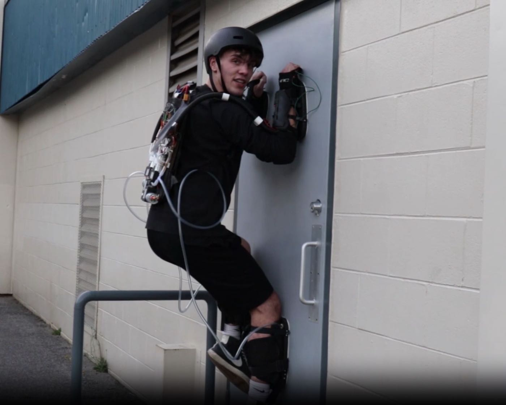
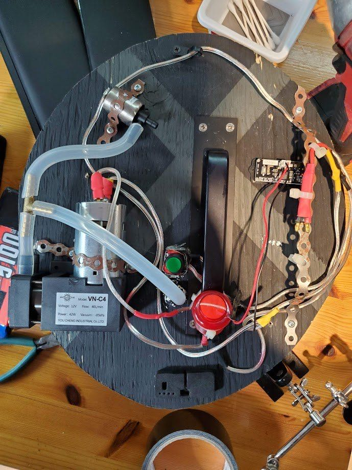
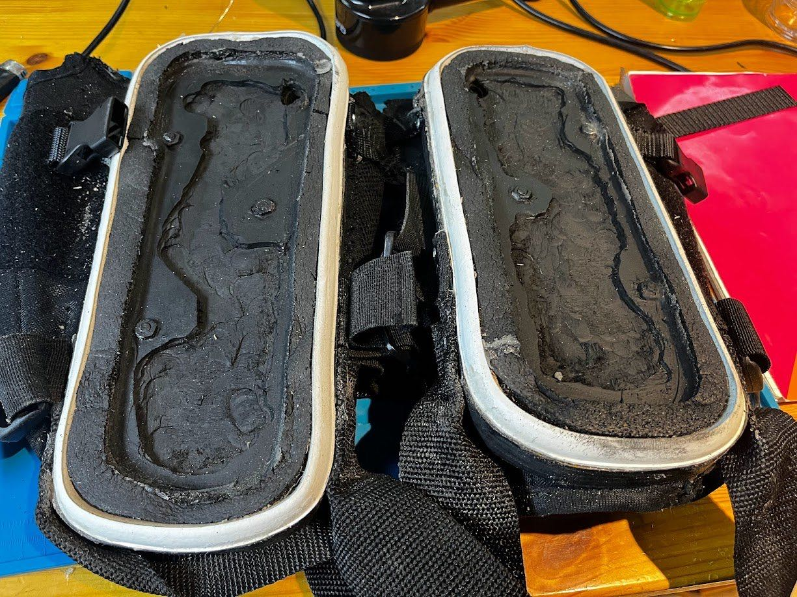
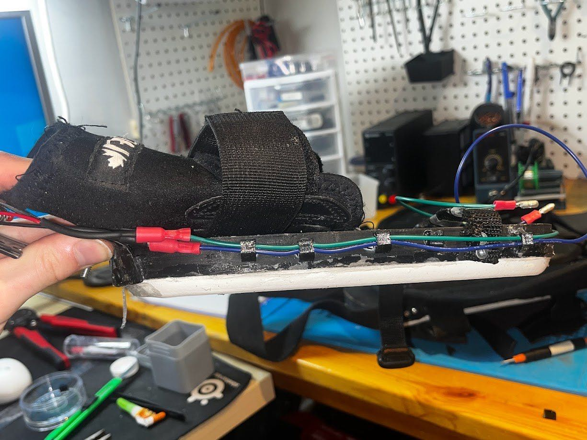
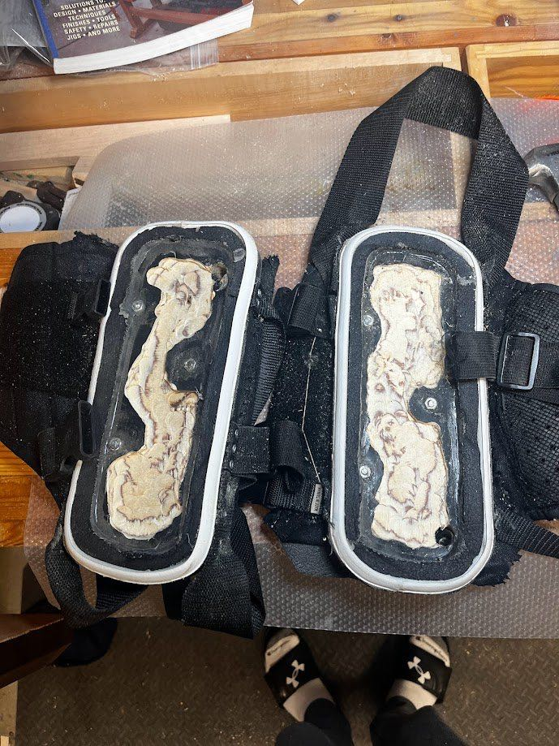

Overview
The first version used two all-in-one vacuum pads, one per hand, with foot loops. Losing suction on either pad meant coming off the wall, and climbing meant moving a hand and foot on the same side together, which was exhausting.
The second version moves the electronics into a backpack frame and gives each limb its own pad and pump. Releasing an arm pad with the button in its handgrip also releases the diagonally opposite leg pad, so the climber moves in a natural cross-crawl while the other diagonal pair holds the wall.
Pressure sensors on every line feed an Arduino that lights a green LED on the forearm only when both pads of a diagonal pair are holding past the safe threshold, so the climber never has to guess whether it's safe to let go.
Design evolution
Version 1 relied on two pads and manual foot loops, creating a single point of failure.
Electronics and safety system
The −9 psi threshold comes from a 170 lb climber, a 2× safety factor and a conservative 0.5 friction coefficient. Spread over one arm pad and one leg pad (96 in²), that needs about 7.1 psi, which was rounded up to allow for leaks and imperfect seals.
Pad construction
Each pad is a partially hollowed wooden plank sealed with a rubber door gasket and a ring of high-density foam, encapsulated in silicone for an airtight, high-friction seal. Arm pads mount to wrist guards with metal handgrips, and leg pads use hockey-pad harnesses with foot straps that carry most of the climber's weight.

Build timelapse and full test
Gallery





Skills and technologies
Source code, wiring diagrams, 3D models and full documentation are in the GitHub repository.